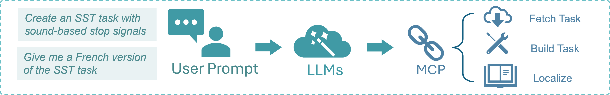

Large Language Models (LLMs) features¶
Our library offers two ways to interact with Large Language Models (LLMs):
taskbeacon-mcp(Recommended): A lightweight server that provides a simple, high-level interface for common task-related operations like cloning, transforming, and localizing PsyFlow tasks. This is the easiest and recommended way to get started.Built-in
LLMClient(Lower-Level): A minimal wrapper around LLM provider SDKs (Gemini, Deepseek) for more direct control. This is suitable for developers who need to customize the LLM interaction beyond the scope oftaskbeacon-mcp.
Why It Matters: Large Language Models (LLMs) significantly enhance the usability and reproducibility of cognitive task development. They enable researchers to translate configuration files for localization, generate detailed documentation from code, and prototype or refine task variants using natural language—all while avoiding repetitive formatting work. By integrating LLMs directly into the PsyFlow ecosystem, we accelerate development, promote clearer communication, and expand accessibility for both developers and collaborators.
1. taskbeacon-mcp (Recommended)¶
taskbeacon-mcp is a lightweight server that simplifies the use of LLMs for managing PsyFlow tasks. It exposes a set of tools that can be easily integrated with LLM agents like the Gemini CLI or Cursor.
How It Works
The taskbeacon-mcp server acts as a bridge between the user’s natural language prompts and the underlying PsyFlow task management functions. The workflow is as follows:

User Prompt: The user provides a prompt describing the desired action (e.g., “Create an SST task with sound-based stop signals” or “Give me a French version of the SST task”).
LLM: The LLM interprets the prompt and selects the appropriate tool from
taskbeacon-mcp.MCP (Model Context Protocol): The
taskbeacon-mcpserver executes the requested tool, which may involve:build_task: Cloning a task template and preparing it for modification.localize: Translating a task’s configuration file.download_task: Fetching a task from the registry.list_tasks: Listing available tasks.list_voices: Listing available text-to-speech voices.
Quick Start
The easiest way to use taskbeacon-mcp is with uvx, which handles the installation and execution in a single command.
Install
uvx:pip install uvx
Configure your LLM tool: Create a JSON configuration file for your LLM tool (e.g., Gemini CLI) with the following content:
{ "name": "taskbeacon-mcp", "type": "stdio", "description": "Local FastMCP server for PsyFlow task operations. Uses uvx for automatic setup.", "isActive": true, "command": "uvx", "args": [ "taskbeacon-mcp" ] }
With this setup, your LLM agent can now use the
taskbeacon-mcptools. For more details, refer to thetaskbeacon-mcpdocumentation.
2. Built-in LLMClient (Lower-Level)¶
Our library also offers a lightweight, unified interface for interacting with Large Language Models (LLMs), currently supporting two providers:
Gemini, which provides free-tier access to powerful models—ideal for getting started with no cost
Deepseek, a cost-effective alternative via the OpenAI SDK (for users who don’t have access to Gemini)
Instead of relying on heavier frameworks like LangChain, we built our own minimal wrapper to keep things simple: no extra dependencies beyond the provider SDKs, a clean and focused API (generate, translate, count_tokens, etc.), and fast, low-overhead execution.
How It Works: The LLMClient class in PsyFlow provides a unified and lightweight interface for interacting with different LLM backends. It abstracts away provider-specific details and offers a simple API with methods like generate() for general-purpose generation, translate_config() for localizing YAML content, task2doc() for auto-generating documentation, test() for verifying connection and basic output, and list_models() to enumerate available models. This modular interface keeps your workflow consistent and efficient across providers like Gemini and DeepSeek.
2.1. Verify the Native SDKs¶
2.1.1. Google-GenAI (Gemini)¶
from google import genai
# 1a) Initialize the Gemini client
genai.configure(api_key="…your Gemini API key…")
client = genai.Client()
# List available model names
model_list = client.models.list()
model_ids = [model.name.split("/")[-1] for model in model_list]
print("Available models:", model_ids)
# Available models: ['embedding-gecko-001', 'gemini-1.0-pro-vision-latest', 'gemini-pro-vision', 'gemini-1.5-pro-latest', 'gemini-1.5-pro-002', 'gemini-1.5-pro', 'gemini-1.5-flash-latest', 'gemini-1.5-flash', 'gemini-1.5-flash-002', 'gemini-1.5-flash-8b', 'gemini-1.5-flash-8b-001', 'gemini-1.5-flash-8b-latest', 'gemini-2.5-pro-exp-03-25', 'gemini-2.5-pro-preview-03-25', 'gemini-2.5-flash-preview-04-17', 'gemini-2.5-flash-preview-05-20', 'gemini-2.5-flash', 'gemini-2.5-flash-preview-04-17-thinking', 'gemini-2.5-flash-lite-preview-06-17', 'gemini-2.5-pro-preview-05-06', 'gemini-2.5-pro-preview-06-05', 'gemini-2.5-pro', 'gemini-2.0-flash-exp', 'gemini-2.0-flash', 'gemini-2.0-flash-001', 'gemini-2.0-flash-lite-001', 'gemini-2.0-flash-lite', 'gemini-2.0-flash-lite-preview-02-05', 'gemini-2.0-flash-lite-preview', 'gemini-2.0-pro-exp', 'gemini-2.0-pro-exp-02-05', 'gemini-exp-1206', 'gemini-2.0-flash-thinking-exp-01-21', 'gemini-2.0-flash-thinking-exp', 'gemini-2.0-flash-thinking-exp-1219', 'gemini-2.5-flash-preview-tts', 'gemini-2.5-pro-preview-tts', 'learnlm-2.0-flash-experimental', 'gemma-3-1b-it', 'gemma-3-4b-it', 'gemma-3-12b-it', 'gemma-3-27b-it', 'gemma-3n-e4b-it', 'embedding-001', 'text-embedding-004', 'gemini-embedding-exp-03-07', 'gemini-embedding-exp', 'aqa', 'imagen-3.0-generate-002', 'veo-2.0-generate-001', 'gemini-2.5-flash-preview-native-audio-dialog', 'gemini-2.5-flash-preview-native-audio-dialog-rai-v3', 'gemini-2.5-flash-exp-native-audio-thinking-dialog', 'gemini-2.0-flash-live-001']
# 1b) Quick echo
response = client.models.generate_content(
model="gemini-1.5-flash",
contents="Hello, how are you?"
)
print(response.text)
# I am doing well, thank you for asking! How are you today?
2.1.2. OpenAI / Deepseek¶
from openai import OpenAI
client = OpenAI(api_key="…your key…", base_url="https://api.deepseek.com")
# 1a) List raw model names
model_resp = client.models.list()
# extract and print their IDs
model_ids = [m.id for m in model_resp.data]
print("Available models:", model_ids)
# Available models: ['deepseek-chat', 'deepseek-reasoner']
# 1b) Quick echo
response = client.chat.completions.create(
model="deepseek-chat",
messages=[
{"role": "system", "content": "You are a helpful assistant"},
{"role": "user", "content": "Hello"},
],
stream=False
)
print(response.choices[0].message.content)
# Hello! How can I assist you today? 😊
2.2. Use Psyflow LLMClient Wrapper¶
from psyflow import LLMClient
import os
# 2a) Instantiate
gemini = LLMClient("gemini", "…your key…", "gemini-2.0-flash")
deep = LLMClient("deepseek","…your key…", "deepseek-chat")
# 2b) List via wrapper (should match SDK lists)
print("🔁 Gemini wrapper sees:", gemini.list_models())
print("🔁 Deepseek wrapper sees:", deep.list_models())
# 2c) Echo test via wrapper (this will send a hello to the model)
print("🔊 Gemini wrapper echo:", gemini.test(max_tokens=5))
print("🔊 Deepseek wrapper echo:", deep.test(max_tokens=5))
# 2d) Echo test via wrapper (send message by setting `ping` parameter)
print("🔊 Gemini wrapper echo:", gemini.test(ping='who are you?', max_tokens=5))
print("🔊 Deepseek wrapper echo:", deep.test(ping='who are you?', max_tokens=5))
3. LLMs-Powered Task Documentation¶
Our platform leverages Large Language Models (LLMs) to automatically generate human-readable documentation for cognitive tasks. This feature is designed to help developers, collaborators, and reviewers quickly understand the structure and parameters of a task—without having to dig through source code.
While this can be done manually with the LLMClient, it is more easily accomplished using the build_task tool in taskbeacon-mcp.
Our LLMClient includes a powerful task2doc() utility that lets you automatically generate a detailed README.md file for any PsyFlow-based cognitive task.
task2doc() analyzes four types of files:
main.py– overall task and block flow.run_trial.py– trial-level stimulus and response logic.utils.py– optional controllers or helpers (if present).config/config.yaml– all task configuration parameters.
It sends these files, along with a structured instruction, to your selected LLM (e.g., Gemini or DeepSeek) and returns a structured markdown document with:
Task name and meta info
Task overview and flow tables
Configuration tables (e.g., stimuli, timing, triggers)
Method section for academic papers
Example:
from psyflow.llm import LLMClient
client = LLMClient(provider="gemini", api_key="your-key", model="gemini-2.5-flash")
readme_text = client.task2doc()
This creates a complete README.md based on your current ./main.py, ./src/run_trial.py, ./src/utils.py, and ./config/config.yaml. If not output_path is specified, it will be saved to ./README.md.
Each generated README.md is organized into the following sections:
Task Name – Extracted from the configuration.
Meta Information – A standardized two-column table including fields like version, author, repository, and software requirements.
Task Overview – A one-paragraph description of the task’s purpose and structure.
Task Flow – Detailed tables explaining the block-level and trial-level logic, including controller logic if applicable.
Configuration Summary – Tables for each config section: subject info, window settings, stimuli, timing, triggers, and adaptive parameters.
Methods (for academic writing) – A well-structured paragraph suitable for use in the Methods section of a scientific manuscript.
This automatic documentation feature reduces the burden on developers, promotes transparency in cognitive task design, and supports open and reproducible science.
4. LLMs-Powered Localization¶
The LLMClient also supports automatic translation of task configurations using the translate_config() method. This localization feature enables your task templates to be easily adapted into other languages while preserving placeholder tokens and formatting. By combining this with PsyFlow’s localization-ready structure, you can easily localize tasks for global deployment.
This is more easily accomplished using the localize tool in taskbeacon-mcp.
translate_config() translate the following content in configuration:
subinfo_mappinglabels (e.g.,"age","gender")Any
stimulientries of typetextortextbox(e.g., instructions or messages)
Example 1: Translate default config (no file saved)
This reads the default ./config/config.yaml, performs the translation in memory, and returns the updated config.
from psyflow.llm import LLMClient
client = LLMClient(provider="deepseek", api_key="your-key", model="deepseek-chat")
translated_config = client.translate_config(target_language="Japanese")
No file is saved—useful for dynamic translation workflows.
Example 2: Translate a loaded config dictionary (no file saved)
You can manually load a config and pass it in to apply translation:
from psyflow import load_config
from psyflow.llm import LLMClient
client = LLMClient(provider="deepseek", api_key="your-key", model="deepseek-chat")
loaded = load_config("./config/config.yaml")
translated = client.translate_config(
target_language="Japanese",
config=loaded # work on this in-memory config
)
Example 3: Translate and save to file
If output_dir is specified, the translated config will be saved to disk.
translated = client.translate_config(
target_language="Japanese",
config="./config/config.yaml",
output_dir="./config",
output_name="config.ja.yaml"
)
This writes the translated YAML to ./config/config.ja.yaml.
Optional Parameters
prompt: Customize the translation instruction if needed.deterministic,temperature,max_tokens: Control LLM generation behavior.Works directly with
load_config()output for in-memory editing.